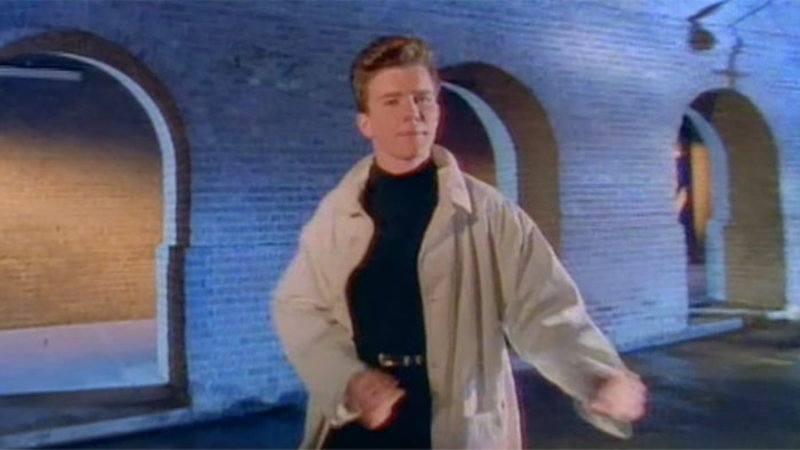
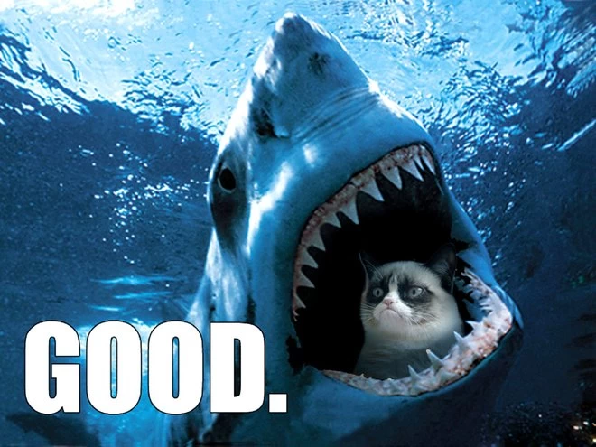
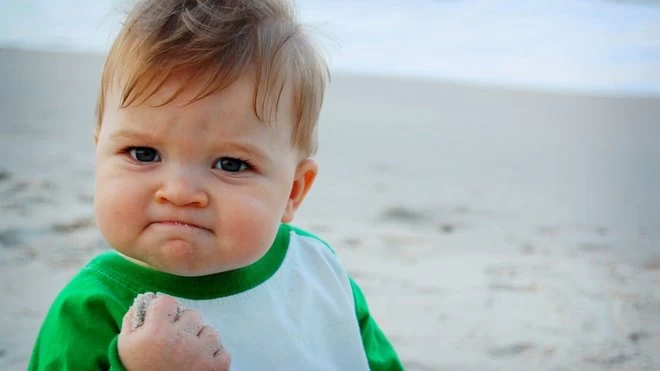
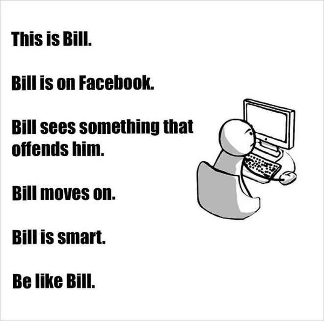

Rickroll
Rickrolling is a bait-and-switch prank that involves posting a hyperlink that is supposedly relevant to the topic at hand in an online discussion.
But re-directs the viewer to the music video of "Never Gonna Give You Up," a 1987 dance pop single by English singer-songwriter Rick Astley.
Since May 2007, numerous versions of the music video on YouTube have garnered hundreds of millions.
largely driven by the widespread practice of "rickrolling" and subsequent resurgence in popularity of the song over the following decade.

Doge
Originating in the depths of 2010, this meme came to life thanks to some glorious photos of Shiba Inus - a breed of tiny and agile Japanese dog with a quizzical face.
Posted on a personal blog, the original photos appeared with one such dog named "Kabosu" casually lounging on a sofa with a sideways glance at the camera.
With the help of Reddit, "Doge" was then born.
Images of the dog are Photoshopped into various poses and situations, plastered with internal monologue quotes in Comic Sans font and delivered to the internet for the world to enjoy.
This popular meme spawned a trademark claim, a satirical form of cryptocurrency (Dogecoin) and much more besides.

Grumpy Cat
Grumpy Cat is a particularly irritable looking cat who goes by the real name "Tardar Sauce".
This meme again took off thanks to Reddit, in late 2012 when original photos of Grumpy Cat were posted online.
Various Photoshopped pics of Grumpy Cat appeared online with captions expressing his distaste for whatever the topic happened to be about.
Grumpy Cat proved so popular that it spawned all sorts of spin-offs including stuffed toys, books, t-shirts and even a coffee drink.

The Success Kid
Success kid (also known as "I hate sandcastles") became popular in around 2008.
When a photo of a smug baby at the beach was used across the web on social media, mainly as personal profile photographs.
Later, the photograph was Photoshopped and turned into thousands of different memes in the animal advice style or referencing his apparent hatred for sandcastles.
Success kid goes by the real name Sammy Griner and has now aged a few years, but still seems just as pleased with himself in all the recent photos we've seen.
His fame also helped to successfully pay for his father's new kidney after a plea for funding for a transplant went online in the middle of 2016.
So maybe he is successful after all!

Shut Up And Take My Money
Animated science-fiction series Futurama features a down-on-his-luck delivery boy Philip J.
Fry who finds himself trapped somewhere in the 31st Century after an unfortunate incident with a cryogenic freezing machine.
In season six, an episode aired called "Attack of the Killer App" in which the creators parodied Apple with the release of the new "eyePhone".
Fry rushes to purchase one of the new devices and interrupts the sales genius with the phrase, "Shut up and take my money!"

Be Like Bill
In the wonderful world of the web, keyboard warriors and discourteous people are rife.
"Be like Bill" is aimed at combatting that plague and trolls in general by sending a message of common sense through means of a simple stick figure called "Bill".
In a series of single frame comic strips, Bill is put into different everyday situations with simple guidance on how to act.
basically tips on how not to annoy other people in real life and online.